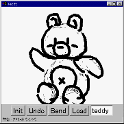
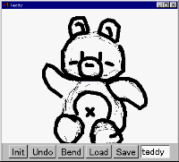

Applet version (left) and Independent version (right)
1) The applet version can only "load" several pre-defined models.
Fill in the desired file name in the text-field, and press "Load".
(We provide teddy, dragon, squirrel, fish, bird, bunny, and plute)
2) The independent Java program version can also "save" your models.
Fill in the desired file name in the text-field, and press "Save".
The file is saved as "filename.obj" in the directory where the package resides.
3) Again, sorry for the numerous bugs of the program.
If you have specific suggestions or comments, let
me know.
Any feedback is welcome.